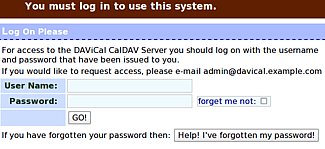

DAViCal
Dieser Artikel wurde für die folgenden Ubuntu-Versionen getestet:
Ubuntu 16.04 Xenial Xerus
Ubuntu 14.04 Trusty Tahr
Artikel für fortgeschrittene Anwender
Dieser Artikel erfordert mehr Erfahrung im Umgang mit Linux und ist daher nur für fortgeschrittene Benutzer gedacht.
Zum Verständnis dieses Artikels sind folgende Seiten hilfreich:
 DAViCal
DAViCal  (ehemals "Really Simple CalDAV Store" bzw. RSCDS) ist ein Kalenderserver, welcher das CalDAV-Protokoll implementiert. Das CalDAV-Protokoll erweitert das HTTP- bzw. das WebDAV-Protokoll um Zugriffsicherungs- und Auswertungsfunktionen für das Kalenderaustauschformat iCalendar. Der Server selbst ist in PHP 5 programmiert und verwendet für die Verwaltung der Daten eine PostgreSQL-Datenbank.
(ehemals "Really Simple CalDAV Store" bzw. RSCDS) ist ein Kalenderserver, welcher das CalDAV-Protokoll implementiert. Das CalDAV-Protokoll erweitert das HTTP- bzw. das WebDAV-Protokoll um Zugriffsicherungs- und Auswertungsfunktionen für das Kalenderaustauschformat iCalendar. Der Server selbst ist in PHP 5 programmiert und verwendet für die Verwaltung der Daten eine PostgreSQL-Datenbank.
Es können verschiedene Arten von Nutzern definiert werden, welche Kalender schreiben, lesen oder auch nur freie Termine einer anderen Person einsehen dürfen. Die Kalender können mit diversen Programmen abgerufen und modifiziert werden. Auch Mobilgeräte und Telefone sind teilweise in der Lage, sich mit den (online) veröffentlichten Kalendern zu synchronisieren. Unter anderem können die folgenden Client-Programme bzw. Geräte mit DAViCal verwendet werden:
Thunderbird mit der Erweiterung Lightning
Neben der Funktion als reiner Kalenderserver kann DAViCAL auch Aufgabenlisten und Notizen verwalten. So wird es möglich, Treffen mit anderen Personen zu planen, Aufgaben in einem Team zu verteilen und die Arbeit zu organisieren.
Sehr interessant ist ein DAViCal-Server in Kombination mit Postfix, Fetchmail, Dovecot (IMAP), OpenLDAP und einem geeigneten E-Mail-Programm mit Kalenderfunktion, da diese Kombination von der Funktion her recht nahe an die weit verbreitete kommerzielle Lösung Exchange/Outlook herankommt (siehe auch weitere Alternativen zu Outlook/MS-Exchange unter Linux  ). Wen die Kombination verschiedener Einzelprogramme abschreckt, sollte sich DavMail Gateway anschauen. Diese Software stellt ein Gateway zu einem bestehenden Exchange-Server bereit.
). Wen die Kombination verschiedener Einzelprogramme abschreckt, sollte sich DavMail Gateway anschauen. Diese Software stellt ein Gateway zu einem bestehenden Exchange-Server bereit.
Seit Version 0.9.9.2 kann ein DAViCal-Server auch Adressen im CardDAV-Format verarbeiten, womit eine gemeinsame Adressenverwaltung auch ohne LDAP z.B. mit Evolution möglich ist.
Voraussetzungen¶
Zunächst müssen Apache 2.4, PHP und PostgreSQL installiert werden und prinzipiell funktionieren. Anleitungen dazu findet man in den Artikeln:
Apache 2.4 (Ubuntu 14.04 oder neuer)
PHP 5 (PHP 7 ab Ubuntu 16.04)
Installation¶
DAViCal ist in den offiziellen Paketquellen enthalten. Folgende Pakete müssen installiert werden [1]:
davical (universe)
davical-doc (optional, Dokumentation)
 mit apturl
mit apturl
Paketliste zum Kopieren:
sudo apt-get install davical davical-doc
sudo aptitude install davical davical-doc
Da die in den offiziellen Paketquellen enthaltene Version unter Umständen älter als der aktuelle Entwicklungsstand ist, kann bis einschließlich Ubuntu 14.04 eine manuelle Installation interessant sein. Dazu kann man entweder eine Fremdquelle nutzen oder die jeweiligen Pakete manuell installieren. Die Verwendung einer Fremdquelle hat den Vorteil, dass Updates automatisch eingespielt werden.
Fremdquelle¶
Zum Einrichten einer Fremdquelle folgt man der entsprechenden Anleitung im DAViCal-Wiki.
Hinweis!
Zusätzliche Fremdquellen können das System gefährden.
Fremdpakete¶
Alternativ können drei Fremdpakete im DEB-Format für die benötigte Bibliothek libawl-php  und die eigentlichen davical-Pakete heruntergeladen und manuell installiert werden. Hierbei muss die Installation des Pakets libawl-php zuerst erfolgen (
und die eigentlichen davical-Pakete heruntergeladen und manuell installiert werden. Hierbei muss die Installation des Pakets libawl-php zuerst erfolgen (VERSION bitte anpassen):
libawl-php_VERSION_all.deb
davical_VERSION_all.deb
davical-doc_VERSION_all.deb
Hinweis!
Fremdpakete können das System gefährden.
Konfiguration¶
Diese Anleitung erhebt keinen Anspruch auf Vollständigkeit, stellt aber einen funktionierenden Kalenderserver mit Webadministration bereit. Eine ausführlichere Anleitung mit erweiterten Konfigurationsmöglichkeiten ist - allerdings noch für Ubuntu 10.04 - im Wiki von DAViCal zu finden.
Der Port 11371 darf nicht durch eine Firewall blockiert werden.
.
Apache¶
Davical kann mit verschiedenen Webservern und PHP ab 5.1 arbeiten. Die Webserver können dann die Daten als Virtueller Host oder als simuliertes Unterverzeichnis zurück liefern. Die letztere, auch als Alias bezeichnete Variante wird im folgenden betrachtet.
Apache 2.4¶
Für Apache Version 2.4 bzw. ab Ubuntu 13.10 liegt die Konfigurationsdatei in /etc/apache2/conf-available/ und wird mit einem symbolischen Link in /etc/apache2/conf-enabled/ gespiegelt. Sie lautet:
1 2 3 4 5 6 7 8 9 10 11 12 13 | ## /etc/apache2/conf-available/davical.conf # <IfModule mod_ssl.c> Alias /davical /usr/share/davical/htdocs <Directory /usr/share/davical/htdocs> Require all granted Options Indexes DirectoryIndex index.php php_flag magic_quotes_gpc Off php_flag register_globals Off </Directory> # </IfModule> |
Der symbolische Link wird erzeugt mit
sudo ln -s /etc/apache2/conf-available/davical.conf /etc/apache2/conf-enabled/davical.conf
Nach Änderungen in den Konfigurationsdateien muss der Webserver (Apache) neu gestartet werden.
sudo apache2ctl graceful
Wer nur SSL-verschlüsselte Verbindungen erlauben will, kann die #-Kommentarzeichen vor den Zeilen mit <IfModule ...> und </IfModule> entfernen.
DAViCal Konfiguration¶
Im Verzeichnis /etc/davical/ wird eine Datei mit dem Namen config.php erstellt und der folgende Inhalt mit einem Texteditor eingetragen:
1 2 3 4 5 6 7 8 | <?php $c->default_locale = "de_DE"; // Diesen String verwenden, wenn die Datenbank auf dem gleichen Host betrieben // wird, wie das Webinterface. $c->pg_connect[] = 'dbname=davical user=davical_app'; // Wenn der Datenbankserver auf einer anderen Maschine läuft, diesen String verwenden. // $c->pg_connect[] = 'dbname=davical user=davical_app host=HOSTNAME port=5432'; ?> |
Die Konfigurationsdatei muss für den Apache lesbar sein. Diese erreicht man, indem man die Leserechte für andere Benutzer setzt.
sudo chmod 644 /etc/davical/config.php
Hinweis:
Die Konfigurationsdatei kann auch so angelegt werden, dass fuer verschiedene Clients im Netzwerk verschiedene Datenbanken verwendet werden. (siehe Davical Configuration )
PostgreSQL¶
Hinweis:
Da in unterschiedlichen Ubuntu-Versionen auch die Versionen von PostgreSQL variieren, ist im folgenden x ein Platzhalter für die Versionsnummer des PostgreSQL-Servers.
Zuerst müssen in der PostgreSQL-Datenbank die Benutzer für DAViCal angelegt werden. Dafür wird ein Terminal [2] geöffnet und der folgende Befehl eingegeben:
sudo -u postgres createuser davical_app sudo -u postgres createuser davical_dba
Die Fragen nach superuser, roles und databases können alle mit "Nein" beantwortet werden, denn der neu zu erstellende Benutzer von PostgreSQL soll keine besonderen Rechte besitzen. Der Vorgang wird für einen weiteren Benutzer wiederholt, wieder werden die auftretenden Fragen verneint.
Jetzt müssen noch die Zugriffsrechte der beiden Nutzer für die PostgreSQL-Datenbank eingerichtet werden. Dazu wird die Konfigurationsdatei /etc/postgresql/VERSION/main/pg_hba.conf mit einem Editor [3] und Root-Rechten [4] geöffnet und die folgenden zwei Zeilen :" den vorhandenen Code vor den bereits vorhandenen Codeblöcken eingefügt.
[...] # TYPE DATABASE USER CIDR-ADDRESS METHOD ## DAViCal darf sich lokal OHNE passwort anmelden. local davical davical_dba trust local davical davical_app trust [...]
Damit die Änderungen wirksam werden, muss der Datenbankserver neu gestartet werden:
sudo /etc/init.d/postgresql restart
Anschließend wird mit einem Skript die DAViCal-Datenbank angelegt:
sudo -u postgres -s /usr/share/davical/dba/create-database.sh
Nachdem das Skript durchgelaufen ist, wird am Ende das Administrator-Password angezeigt.
Hinweis:
Dieses Passwort sollte man sich notieren. Es kann und sollte später über das Webinterface geändert werden. Das Passwort steht in jedem Fall auch als Klartext in der Datenbank. Bei entsprechender Konfiguration und Verwendung von SSL-Verschlüsselung (https://) ist dies jedoch vernachlässigbar.
Damit ist die Grundkonfiguration abgeschlossen und man kann sich mit der Erstellung von Benutzern und Ressourcen beschäftigen.
Benutzung¶

Administration¶
Als Administrator kann man mit einem Web-Browser lokal über
oder
auf die Verwaltung zugreifen und Benutzer und deren Rechte einrichten. Der Anmeldename ist admin und das Passwort ist das Passwort aus der Datenbankerstellung. Als Erstes sollte das Passwort geändert werden. Für einen schnellen Funktionstest ist es ausreichend, einen neuen Benutzer nur mit Benutzername und Passwort anzulegen.
Empfehlenswert ist auf jeden Fall ein Blick in die umfangreiche Dokumentation , um z.B. Gruppen festzulegen, damit Benutzer auch untereinander Kalenderdaten austauschen können (siehe auch Clarification of user types and relationships ).
Clients¶
Der Zugriff mit einem geeignetem Clientprogramm erfolgt grundsätzlich über die Adresse (URL) des DAViCal-Servers:
http://<IP-Adresse-des-DAVical-Servers>/davical/caldav.php/<Benutzername>/home/
Das Verzeichnis /home ist der Standardkalender. Konfigurationsanleitungen mit Bildern für einzelnen Clients gibt es auf der Webseite Client Configuration .
Ab Version 0.9.9.5 ist der Kalender über folgende URL erreichbar:
http://<IP-Adresse-des-DAVical-Servers>/davical/caldav.php/<Benutzername>/calendar/
Das Adressbuch ist über folgende URL erreichbar:
http://<IP-Adresse-des-DAVical-Servers>/davical/caldav.php/<Benutzername>/addressbook/
Upgrade¶
Die neuen Pakete herunterladen und installieren. DAViCal bringt ein eigenes Upgrade-Skript zum Aktualisieren der Datenbank mit.
Hinweis:
Wer früher sichert, hat später was zum Rücksichern. Soll heißen: Vor dem Update sollte die Datenbank gesichert werden.
pg_dump -W -U postgres davical > davical_dateNtime.psql
Dann kann man das Update-Skript ausführen:
sudo -u postgres -s /usr/share/davical/dba/update-davical-database
Probleme und Lösungen¶
Weiße Seite nach der Installation¶
Es kann passieren, dass nach der Installation nur eine weiße Seite erscheint. Folgende Befehle könnten dann helfen:
cd /usr/share/davical/inc sudo ln -s /usr/share/awl/inc/* .
Termineinladungen¶
Im Zusammenspiel von DAViCal und Thunderbird/Lightning kann es beim Versenden von Termineinladungen zu Problemen kommen. Man kann zwar die Funktion zur Termineinladung in Lightning ausführen, aber im Anschluss wird weder die Frage nach der Outlook-Kompatibilität gestellt noch wird eine E-Mail versendet. Um dieses Problem zu lösen, ist ab der Version 0.9.9.4-1 von DAViCal der Konfigurationsdatei /etc/davical/<IP_Adresse oder kanonischer_Name>-conf.php eine Zeile hinzuzufügen:
$c->enable_auto_schedule = false;
Mit der Auslieferung von Thunderbird 5 / Lightning 1.04b kann es sein, dass der obere Workaround im Zusammenspiel mit DAViCal 0.9.9.4-1 nicht mehr funktioniert. Die Termineinladungen können nun aber durch Einfügen der folgenden Zeile in die /etc/davical/<IP_Adresse oder kanonischer_Name>-conf.php anstelle der zuvor genannten wieder aktiviert werden:
$c->override_dav_header = '1, 2, 3, access-control, calendar-access, calendar-schedule, extended-mkcol, calendar-proxy, bind';
Der Mangel an dieser Lösung ist, dass eventuelle Neuerungen in zukünftigen Updates vielleicht nicht zur Verfügung stehen.
Synchronisation von Kontakten mit iOS¶
Möchte man Kontakte mit iOS Geräten (4.3.5) synchronisieren, dann muss die Konfiguration des Apache noch um einen zweiten Alias ergänzt werden, da die Account-URL bei CardDav-Accounts nicht manuell hinterlegt werden kann.
Die Konfigurationsdatei /etc/apache2/conf.d/davical.conf dazu um folgende Zeile ergänzen:
1 2 3 | ... Alias /principals /usr/share/davical/htdocs ... |
Statt eines CalDav-Accounts wie bei einem Kalender fügt man dann einen CardDav-Account hinzu.
Alternativen¶
CalDAV Server
- ÜbersichtBaikal
- CalDAV- und CardDAV-Server, Zugriff nur über Client-Programme (keine Weboberfläche)WebCalendar
- Kalenderserver (webcalendar)PHP-Calendar
- Lösung mit PHPTeamCal Pro
- Webkalender für TeamsTUTOS
- weiterer Webkalender für TeamsPHP iCalendar
- Lesezugriff auf iCalendar-DateienSOGo - Groupware mit CalDAV-Implementation
Tine 2.0
- Groupware und Customer Relationship Management (CRM) mit CalDAV-Implementation
Links¶
717810
- Lösung für Bug mit weißer SeiteDAViCal tips
- ursprüngliche Grundlage dieses Artikels
- Erstellt mit Inyoka
-
 2004 – 2017 ubuntuusers.de • Einige Rechte vorbehalten
2004 – 2017 ubuntuusers.de • Einige Rechte vorbehalten
Lizenz • Kontakt • Datenschutz • Impressum • Serverstatus -
Serverhousing gespendet von